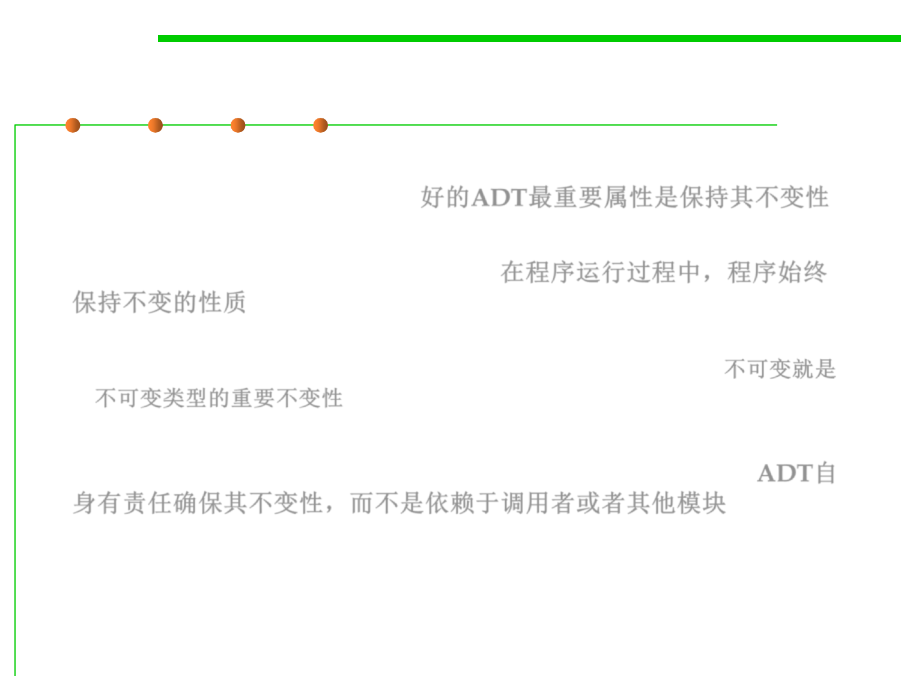

Invariants of an ADT
3.3 Abstract Data Type (ADT)
▪ The most important property of a good abstract data type is that
it preserves its own invariants 好的ADT最重要属性是保持其不变性
▪ An invariant is a property of a program that is always true, for every
possible runtime state of the program. 在程序运行过程中，程序始终
保持不变的性质
– Immutability is one crucial invariant: once created, an immutable object
should always represent the same value, for its entire lifetime. 不可变就是
不可变类型的重要不变性
▪ Saying that the ADT preserves its own invariants means that the
ADT is responsible for ensuring that its own invariants hold. ADT自
身有责任确保其不变性，而不是依赖于调用者或者其他模块
– It doesn’t depend on good behavior from its clients.
– Correctness doesn’t depend on other modules.